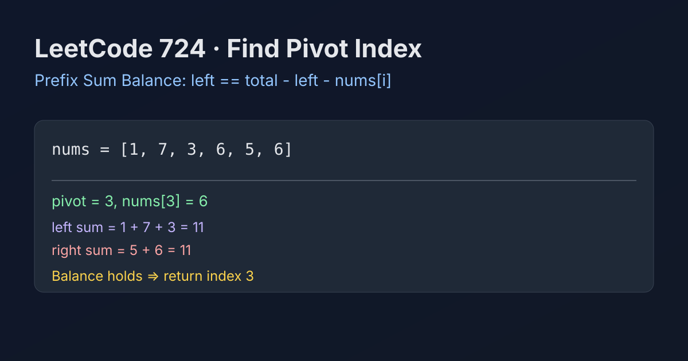

LeetCode 724: Find Pivot Index (Prefix Sum Balance)
LeetCode 724Prefix SumArrayToday we solve LeetCode 724 - Find Pivot Index.
Source: https://leetcode.com/problems/find-pivot-index/

English
Problem Summary
Given an integer array nums, return the leftmost index where the sum of all numbers strictly to its left equals the sum strictly to its right. If none exists, return -1.
Key Insight
At index i, let left be the prefix sum before i. Then right sum is total - left - nums[i]. So the pivot condition is:
left == total - left - nums[i]
Brute Force and Limitations
Brute force recomputes left/right sums for every index, leading to O(n²) time. This is too slow for large arrays and repeats the same additions many times.
Optimal Algorithm Steps (One Pass After Total Sum)
1) Compute total = sum(nums).
2) Initialize left = 0.
3) For each index i, check if left == total - left - nums[i].
4) If true, return i immediately (leftmost pivot).
5) Otherwise set left += nums[i] and continue.
6) Return -1 if no index satisfies the condition.
Complexity Analysis
Time: O(n).
Space: O(1).
Common Pitfalls
- Updating left before checking current index.
- Forgetting that pivot excludes nums[i] from both sides.
- Returning the last pivot instead of the first one.
- Integer overflow risk in languages with fixed-size ints (use long if constraints are larger).
Reference Implementations (Java / Go / C++ / Python / JavaScript)
class Solution {
public int pivotIndex(int[] nums) {
int total = 0;
for (int x : nums) total += x;
int left = 0;
for (int i = 0; i < nums.length; i++) {
if (left == total - left - nums[i]) {
return i;
}
left += nums[i];
}
return -1;
}
}func pivotIndex(nums []int) int {
total := 0
for _, x := range nums {
total += x
}
left := 0
for i, x := range nums {
if left == total-left-x {
return i
}
left += x
}
return -1
}class Solution {
public:
int pivotIndex(vector& nums) {
int total = accumulate(nums.begin(), nums.end(), 0);
int left = 0;
for (int i = 0; i < (int)nums.size(); ++i) {
if (left == total - left - nums[i]) return i;
left += nums[i];
}
return -1;
}
}; class Solution:
def pivotIndex(self, nums: List[int]) -> int:
total = sum(nums)
left = 0
for i, x in enumerate(nums):
if left == total - left - x:
return i
left += x
return -1/**
* @param {number[]} nums
* @return {number}
*/
var pivotIndex = function(nums) {
let total = 0;
for (const x of nums) total += x;
let left = 0;
for (let i = 0; i < nums.length; i++) {
if (left === total - left - nums[i]) return i;
left += nums[i];
}
return -1;
};中文
题目概述
给定整数数组 nums，返回最靠左的“中心下标”：该下标左侧元素和等于右侧元素和。若不存在，返回 -1。
核心思路
遍历到下标 i 时，left 表示左侧前缀和，右侧和可由 total - left - nums[i] 计算得到。满足下式即为中心下标：
left == total - left - nums[i]
基线解法与不足
基线做法是每个位置都单独求左和与右和，时间复杂度 O(n²)，重复计算多，数组变大时效率差。
最优算法步骤（总和 + 一次扫描）
1）先求数组总和 total。
2）初始化左侧和 left = 0。
3）按下标从左到右遍历，判断 left == total - left - nums[i]。
4）若成立，立即返回当前下标（保证最左）。
5）若不成立，执行 left += nums[i] 继续。
6）遍历结束仍未命中则返回 -1。
复杂度分析
时间复杂度：O(n)。
空间复杂度：O(1)。
常见陷阱
- 先更新 left 再判断，导致错位。
- 把 nums[i] 错算进左侧或右侧。
- 题目要求返回最左中心下标，却继续遍历覆盖答案。
- 大数据范围下可能溢出，应使用更大整型（如 long）。
多语言参考实现（Java / Go / C++ / Python / JavaScript）
class Solution {
public int pivotIndex(int[] nums) {
int total = 0;
for (int x : nums) total += x;
int left = 0;
for (int i = 0; i < nums.length; i++) {
if (left == total - left - nums[i]) {
return i;
}
left += nums[i];
}
return -1;
}
}func pivotIndex(nums []int) int {
total := 0
for _, x := range nums {
total += x
}
left := 0
for i, x := range nums {
if left == total-left-x {
return i
}
left += x
}
return -1
}class Solution {
public:
int pivotIndex(vector& nums) {
int total = accumulate(nums.begin(), nums.end(), 0);
int left = 0;
for (int i = 0; i < (int)nums.size(); ++i) {
if (left == total - left - nums[i]) return i;
left += nums[i];
}
return -1;
}
}; class Solution:
def pivotIndex(self, nums: List[int]) -> int:
total = sum(nums)
left = 0
for i, x in enumerate(nums):
if left == total - left - x:
return i
left += x
return -1/**
* @param {number[]} nums
* @return {number}
*/
var pivotIndex = function(nums) {
let total = 0;
for (const x of nums) total += x;
let left = 0;
for (let i = 0; i < nums.length; i++) {
if (left === total - left - nums[i]) return i;
left += nums[i];
}
return -1;
};
Comments